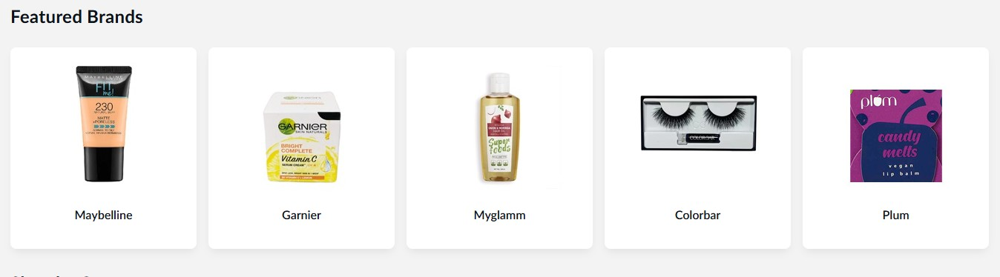
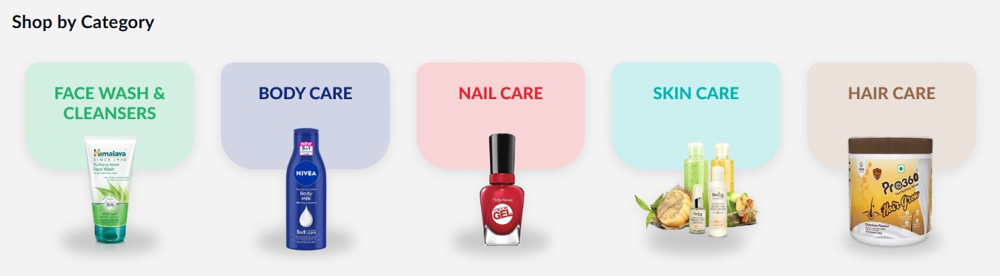
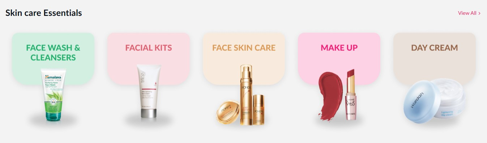
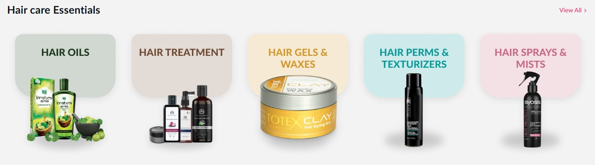
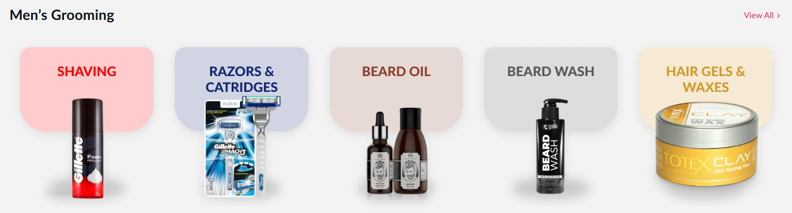
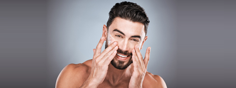
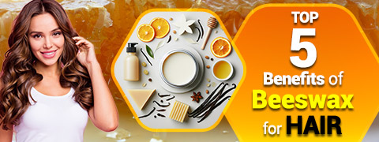
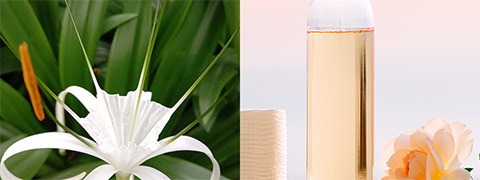
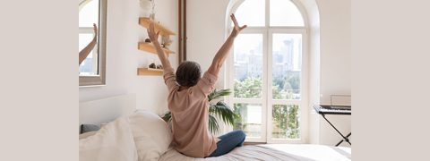

Covid Essentials
Diabetes
Cardiac Care
Stomach Care
Ayurvedic
Homeopathy
Fitness
Mom & Baby
Devices
Surgicals
Sexual Wellness
Treatments
Skin Care
Personal Care






Men's Skincare 101: 6 Essential Steps For A Flawless Routine

Beeswax for Hair: Benefits, How To Use It And Precautions

Kewra Water: Brilliant Beauty Benefits Of This Floral Potion For Glowing Skin

Do Regular Morning Habits Fuel Your Day And Keep You Healthy?
The global market for cosmetics is expected to rise exponentially in the next 10 years. The demand for cosmetics online has shot up as beauty products can dramatically improve an individual's overall appearance. In the last decade, cosmetic products have evolved from being a luxury good into an absolute need in modern life. Large multinational companies are focussed on catering to the individual requirements of men and women by offering comprehensive product lines, such as face care, hair care, and body care. In addition, there has been an increasing number of launches of anti-ageing products, while innovative and convenient packaging designs, and on-the-go products in compact containers are becoming very popular. Every individual has a unique combination of hair texture, skin tone, eye colour, and lip shape. As a result, manufacturers are concentrating their efforts on the development and diversification of their product portfolios to meet the special requirements of each individual.
After the pandemic scare, concerns over one's body and well-being are growing due to schedule changes, as well as better eating habits and sleep cycles. Men and women want to appear healthier and more attractive with the use of beauty care products. Consequently, this has led to a growing demand for cosmetic products from younger and aged people. Increasing awareness about the importance of health and personal grooming is fuelling increased demand for sustainable cosmetics, which in turn is driving market expansion.
After the pandemic scare, concerns over one's body and well-being are growing due to schedule changes, as well as better eating habits and sleep cycles. Men and women want to appear healthier and more attractive with the use of beauty care products. Consequently, this has led to a growing demand for cosmetic products from younger and aged people. Increasing awareness about the importance of health and personal grooming is fuelling increased demand for sustainable cosmetics, which in turn is driving market expansion.On a worldwide scale, beauty products manufactured using ingredients produced from natural sources are more popular since they are safe to use. As people become more conscious of environmental issues, there is more demand for items that are safe for the environment as well. The increased demand for eco-friendly cosmetics and sustainable upcycled packaging can be linked to increased consumer knowledge regarding the potentially harmful impact that man-made chemicals have on both human health and the natural environment.
The worldwide clean beauty industry is expected to double in the next 5 years. In the past few years, consumers have spent more time on skincare than cosmetics, resulting in a better understanding of product ingredients. Clean beauty signifies that the product is non-toxic, and the listed ingredients are cruelty-free. Consumers are paying close attention to cruelty-free cosmetic products, resulting in a robust demand for clean beauty products. As long as synthetic or laboratory-created components are safe, there will be a consistent long-term demand from clean beauty consumers.
Before the pandemic, buyers were more interested in buying beauty products online that make them look seductive. After the pandemic, people are more interested in clean beauty products with environment-friendly packaging that are also aesthetically appealing. Moreover, consumers want beauty products that enhance their well-being, their mood, and desirability. Also, since last year, experts have noted new interest in fragrance and hair care products.
Since 2022, market experts have observed that consumers have developed an appetite for health and well-being. Also, people choose to buy specialised hair care products from stores and buy cosmetics online as well. Consumers who invest more in the premium hair care products are focused on sophisticating their premium hair care routines. Additionally, consumer habits are focusing on skin care, cosmetic products, hair colour products, where people seek innovation in cosmetics, not just utility.
Experts foresee that consumers will buy more skin care, hair care, cosmetic products, and fragrances as people are developing specialised daily morning and night routines. Beauty and body care products are expected to be the fastest-growing markets over the next few years. The expansion of the skin care industry is fuelled by the increased awareness of the adverse effects of synthetic and chemical goods. Additionally, consumers prefer to buy beauty products online as it is more convenient. Thus, the e-commerce industry is expected to boost cosmetic market growth even further. Going forward, cosmetic brands see themselves more as agents of personal growth and social progress. Beauty product manufacturing is increasingly focused on natural ingredients. The beauty industry wants to address climate change and protect Earth’s resources as well. Thus, a holistic concern for the climate and wellbeing of Earth is powering a growing retail niche.
The main categories of cosmetic products are cosmetics, sun care, skin care, hair care, nail care and body care.
When it comes to cosmetic products that appeal to women, each woman has individual preferences and a customised shopping strategy, as every individual has unique skin, hair, and nail type. Also, herbal & natural products are very popular. Many women have skin that is sensitive or allergic to chemicals, so they turn to natural and herbal beauty products. Brand values also plays a strong role, and some products of the leading global and Indian brands are very popular because they are reliable, authentic, and safe.
Experts recommend that every woman must have a sunscreen, a daily face moisturiser and a range of products for a morning and night-time beauty routine. Other must-have products can include a good foundation, a quality shampoo and conditioner, a body oil & body scrub, nail polish and a neutral eyeshadow palette.
The average Indian woman uses about 8-10 different beauty products, including cosmetics, cleansers, conditioners, henna & hair dyes, fragrances, skin & nail care products, and scented lotions.